Arabic word suggestions as you type on your keyboard, in any Windows app.
Version 1.1.1 · https://nasmn77.github.io/Itmam/en/ The pictures in this guide are from the app itself, with sample data.
Contents
What Itmam is
Before you start
Typing with suggestions
Your call from the bar: right-click
Phrases
Text shortcuts
Long phrases
The tray menu
Settings: General
Appearance
Keyboard shortcuts
Excluded apps
My words
My phrases and text shortcuts
Long phrases in Settings
Updates and About
Privacy
Troubleshooting
Shortcut summary
1. What Itmam is
Itmam suggests Arabic words while you type on your keyboard, the way a phone does: a small bar appears above the caret with the closest words to what you started typing, and one key inserts the one you want.
In every app: Notepad, Word, browsers, email and most apps, with no setup.
A large dictionary: about 880,000 words from everyday Arabic and Arabic Wikipedia.
Learns from you: the words you use become suggestions, and the ones you use most come first.
Saves repeated typing: completes well-known phrases, turns your shortcuts into full text, and inserts long replies of several lines.
Private: it sends no data and does not save your text.
2. Before you start
An Arabic keyboard layout
Itmam works only while you type with an Arabic layout. To add one: Windows Settings → Time & language → Language & region → Add a language → Arabic. Switch layouts with Alt + Shift or Win + Space. With an English layout Itmam does nothing.
Where is Itmam?
Itmam opens no window: it runs in the notification area next to the clock, and its icon is a bar with the letter «ت». When it starts, an "Itmam is running" notification appears. If you cannot see the icon, click the ^ arrow next to the clock.
Click the icon with either mouse button to open its menu (chapter 8).
Start with Windows
Itmam can start automatically with Windows: Settings → General → "Start with Windows".
3. Typing with suggestions
Type the first two letters of a word, and the bar appears above the caret.
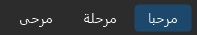
أهلًا و مرح
Choosing a suggestion
Tab inserts the first suggestion, the one highlighted in the selection color.
Ctrl + 2 or 3… inserts a suggestion by its number. Numbers can be shown on the bar (Appearance).
With the arrow keys: ↑ moves into the bar, ←→ choose, Enter inserts, Esc or ↓ leaves.
Or click the suggestion.
Esc hides the bar until you start the next word.
After inserting, Itmam adds a space (can be turned off in General), but not when a space or punctuation already follows the caret.
Picked the wrong one?
Press Backspace right after inserting, and what you typed comes back.
It understands how you type
Without hamza: «احمد» finds «أحمد», and «ان» offers «أن», «إن» and «أنا».
With attached letters: the article and attached conjunctions and prepositions: «والمد» finds «والمدرسة».
Common mistakes: «لاكن» offers «لكن» first, and «انشاءالله» offers «إن شاء الله». Nothing is replaced automatically: you choose.
From the middle of a word: go back into a word with a click or Backspace, and Itmam completes it from the caret.
No suggestions appear while text is selected, in password fields, in excluded apps, or in full-screen games.
4. Your call from the bar: right-click
Right-click any suggestion, and buttons appear above it:
Delete: for a word Itmam learned from you: it is forgotten (and learned again if you use it). For a phrase: removed from your phrases, or hidden if it is built in.
Block: for a word you never want: it is never suggested, even if it is in the dictionary. Unblock it in "My words".
Add to My phrases: for a phrase, to keep it.
From the keyboard: while choosing with the arrows, Ctrl + Delete forgets the selected learned word.
5. Phrases
Itmam knows about 250 common phrases: greetings, remembrance, prayers, occasions and formal letters. Type the start of one and it offers the rest:
After «بسم » it offers «الله الرحمن الرحيم», and Tab inserts it whole. Or keep going word by word.
Your own: your signature or your organization's name, added in "My phrases", are suggested first.
Learned phrases: words you type in a row twice (2 to 5 words) are learned as a phrase. Sequences not repeated are deleted after 30 days. This can be turned off.
6. Text shortcuts
A short code you type: the bar offers its text first, and Tab puts it in place of the code. For example, type «ع1» and it offers «السلام عليكم ورحمة الله وبركاته».
A code starts with an Arabic letter and may be followed by digits. Add yours in Settings → "Text shortcuts". A code is never replaced automatically: «ع1» stays as it is unless you press Tab.
7. Long phrases
Replies of several lines you write often, such as support answers: the greeting, asking for the order number, the password reset steps, closing the ticket.
Save each reply once in Settings → "Long phrases" → "Add": a name you know it by, and a text of up to 4,000 characters over several lines.
In any app, press Ctrl + Shift + Space: a list of your replies opens.
Type part of a name or of the text to filter it, and move with the arrow keys while you preview the reply.
Press Enter: the reply is pasted at the caret with its lines as you wrote them. Esc closes the list.
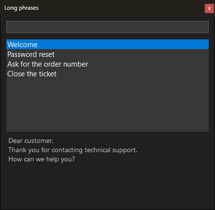
The long phrases list, with search and a preview of the selected reply.
The reply is inserted through the clipboard; Itmam then puts back what was on your clipboard, and the reply stays out of clipboard history.
For support teams
Export the approved replies to a text file and import it on your colleagues' PCs, so everyone sends the same wording. Importing adds to what each person has and removes nothing.
8. The tray menu
Click Itmam's icon next to the clock with either mouse button:
Turn off Itmam
Pause for 1 hour
Turn off Itmam in Notepad.exe
Settings
User guide
About
Exit
Turn off / Turn on Itmam: stops and restores the suggestions, remembered after a restart. The same from the keyboard: press Ctrl + Alt and release them.
Pause for 1 hour: Itmam comes back by itself after an hour, or choose "Resume now".
Turn off Itmam in …: named after the last app you typed in; it is added to the excluded apps after a confirmation.
Settings, User guide and About.
Exit: closes Itmam completely until you start it from the Start menu or sign in again.
Small notifications appear when Itmam is turned off or on (can be turned off), and when an update is available in the Store.
9. Settings: General
Open Settings from the tray menu. The pages are listed on the left, and every change applies at once.
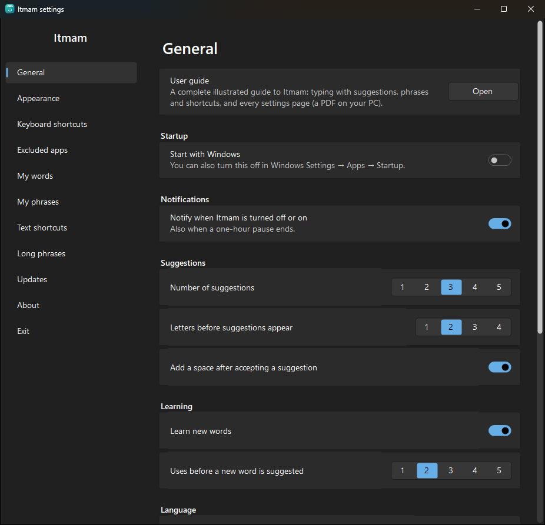
User guide: opens this guide.
Start with Windows, and Notify when Itmam is turned off or on.
Suggestions: how many the bar shows (1 to 5), letters before they appear, and a space after accepting.
Learning: learn new words or not, and how many uses before a new word is suggested.
Language: the interface language, Arabic or English.
General: dictionary, backup, statistics
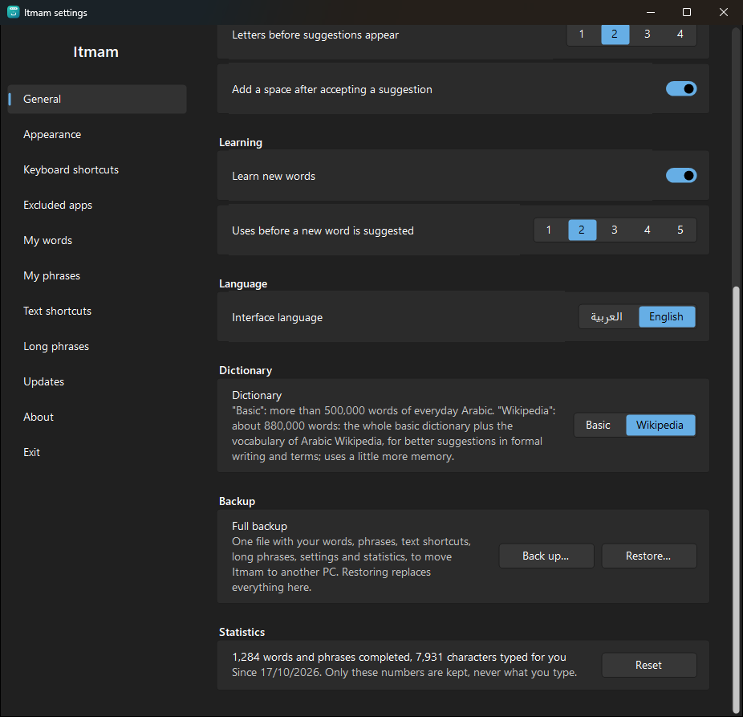
Dictionary: "Wikipedia" (the default), about 880,000 words: the basic dictionary plus the vocabulary of Arabic Wikipedia for formal writing and terms. "Basic": more than 500,000 words, using less memory.
Full backup: one file (.itmam) with your words, phrases, text shortcuts, long phrases, settings and statistics, to move Itmam to another PC. "Restore" replaces everything on this PC with the file's content, after a confirmation.
Statistics: how many words and phrases Itmam completed and how many characters it typed for you. Only these two numbers are kept.
10. Appearance
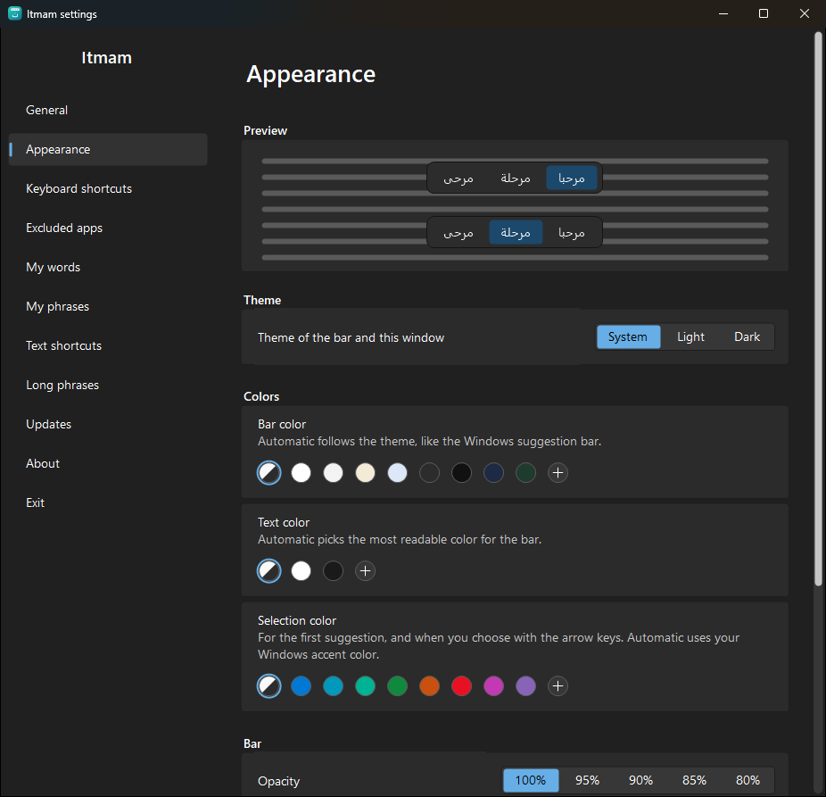
Theme: System, Light or Dark, for the bar and the settings window.
Colors: bar, selection and text. "Automatic" picks the most readable color, and a warning appears if the text gets hard to read.
Bar: opacity, text size, highlighting the first suggestion, and showing suggestion numbers.
A live preview at the top; "Reset to the Windows look" resets everything.
11. Keyboard shortcuts
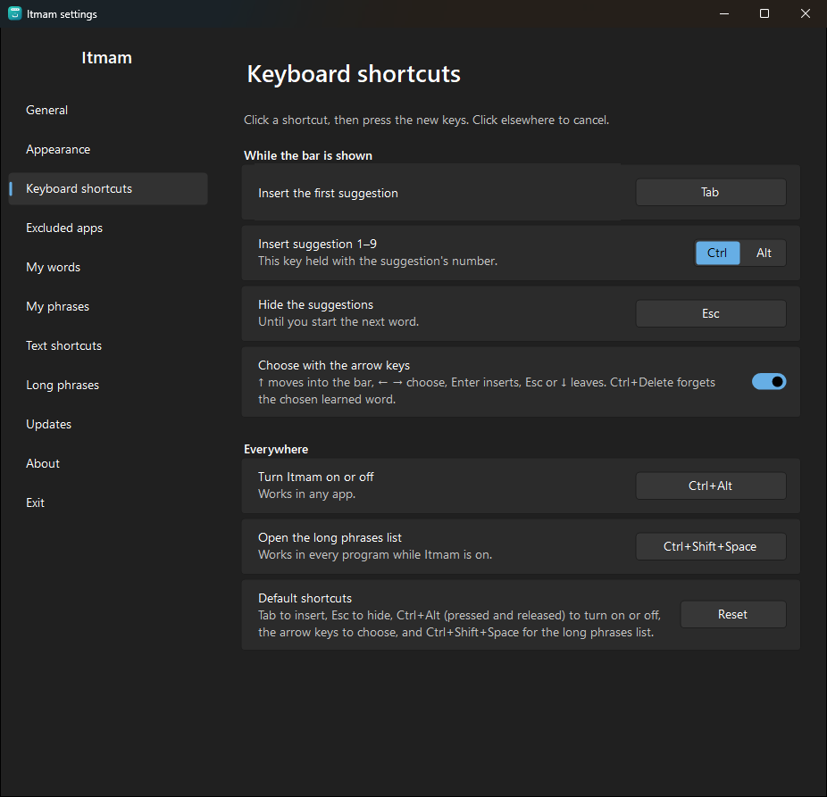
Click a shortcut, then press the new keys; click elsewhere to cancel. Itmam refuses shortcuts that type text or clash with common Windows shortcuts, and says why.
While the bar is shown: insert the first suggestion (Tab), insert by number (Ctrl or Alt with the number), hide (Esc), and choosing with the arrow keys.
Everywhere: turn Itmam on or off (Ctrl + Alt), and open the long phrases list (Ctrl + Shift + Space).
12. Excluded apps
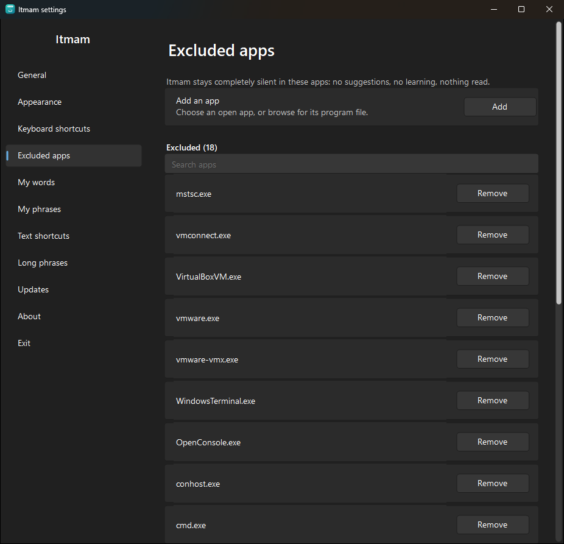
Itmam stays completely silent in these apps: no suggestions, no learning, nothing read.
Add an app: from the open apps, or "Browse…" for its program file.
The default list holds remote desktop, virtual machines, terminals and game launchers.
Quickest: "Turn off Itmam in …" from the tray menu while you are in the app.
13. My words
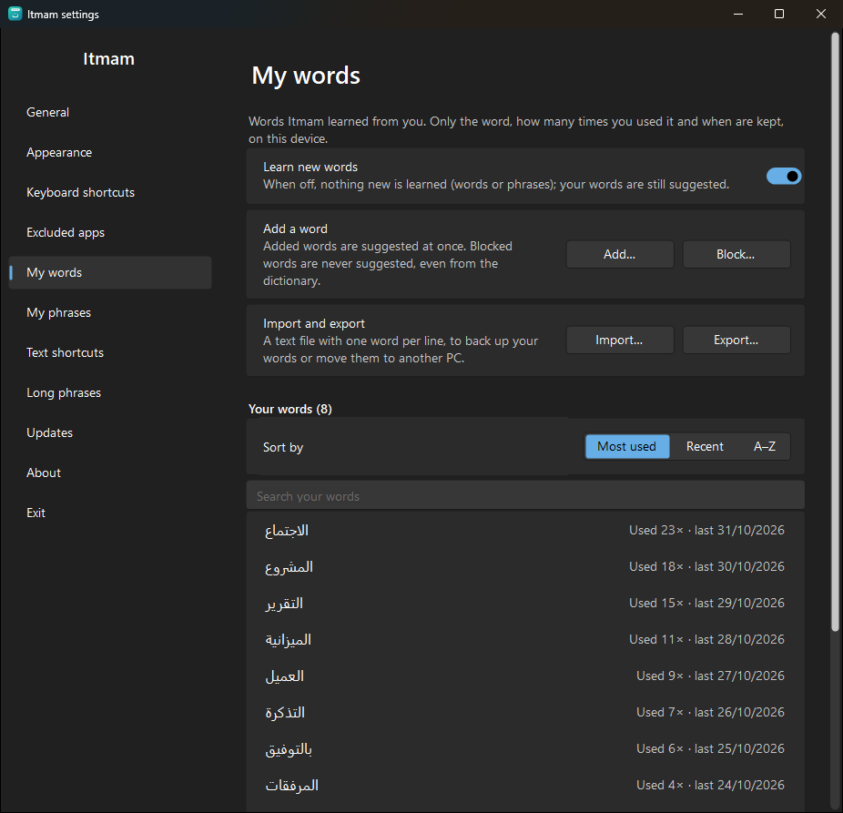
The words Itmam learned from you. Only the word, how many times you used it and when are kept, on this PC only.
Learn new words: when off, nothing new is learned, and your words are still suggested.
Add: a word suggested at once. Block: a word never suggested, even if it is in the dictionary.
The list sorts by most used, recent or A–Z, with search. Click a word to edit, block or delete it.
Import and export: a text file with one word per line. "Delete all my words" cannot be undone.
14. My phrases and text shortcuts
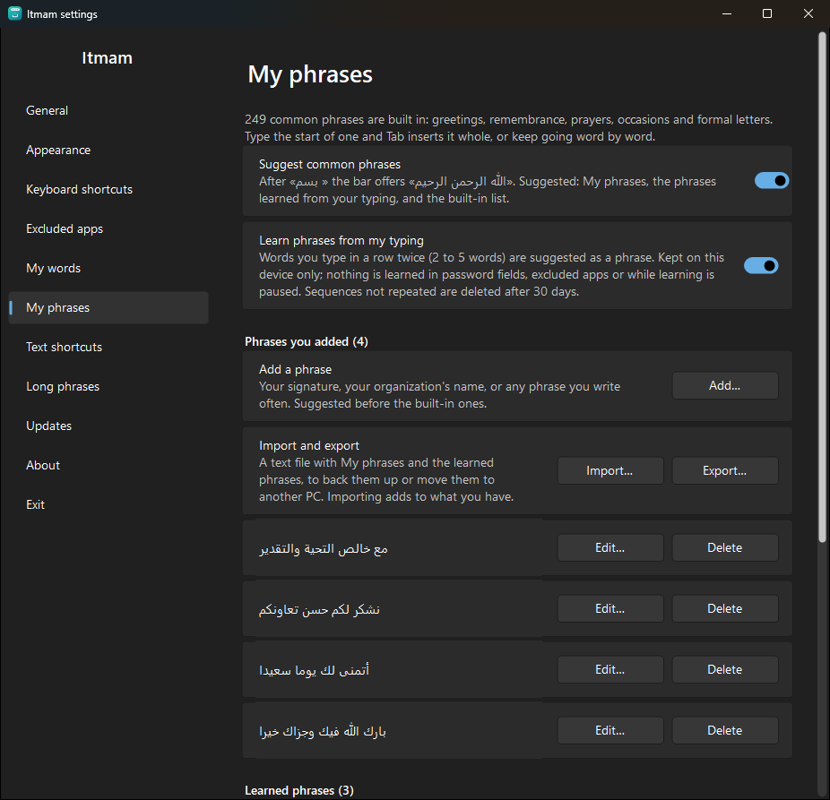
Suggest common phrases and Learn phrases from my typing: each can be turned off.
Phrases you added: add, edit and delete, import and export.
Learned phrases: all of them, to move to your phrases or delete.
Deleted built-in phrases: the ones you hid from the bar, restorable here.
Text shortcuts
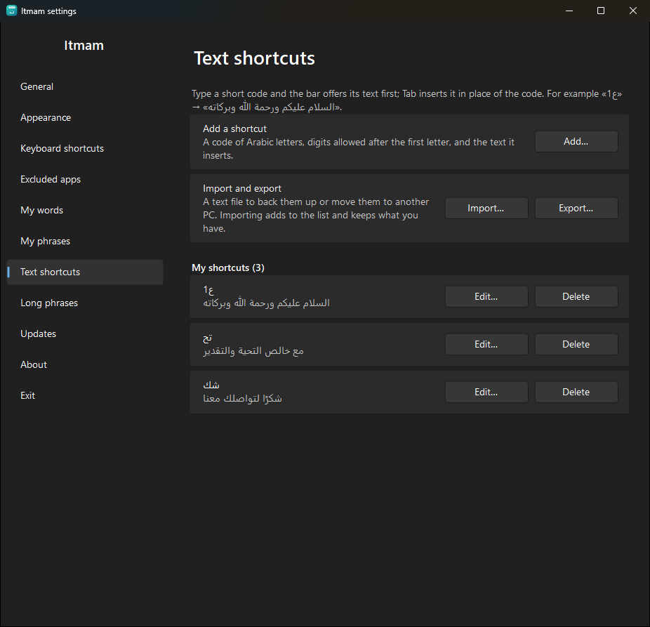
Add a shortcut: the code (such as «ع1») and the text it puts in.
Edit or delete any shortcut in the list, and move them all to another PC with import and export.
15. Long phrases in Settings
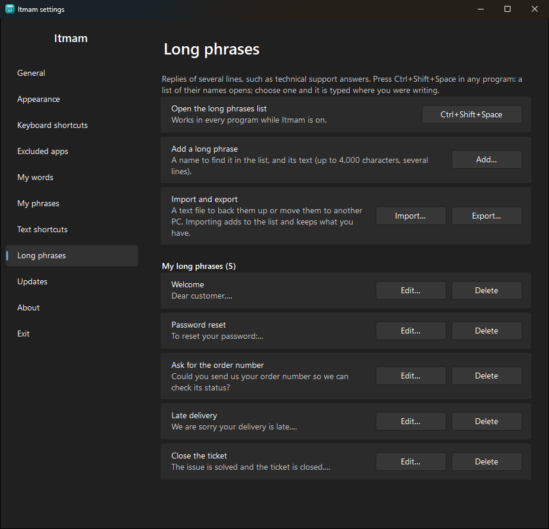
Open the long phrases list: the shortcut; click it to change it.
Add a long phrase: a name (up to 60 characters) and the text (up to 4,000 characters). In the text box, Enter starts a new line and Ctrl + Enter saves.
Edit and delete; import and export to share them with colleagues.
16. Updates and About
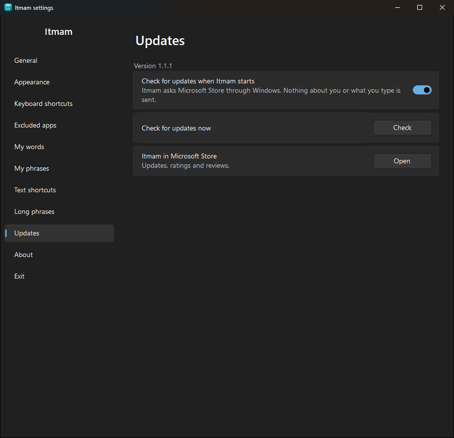
Updates: at start-up Itmam asks Microsoft Store whether a newer version exists (can be turned off), and "Check" asks now. The update itself comes through the Store.
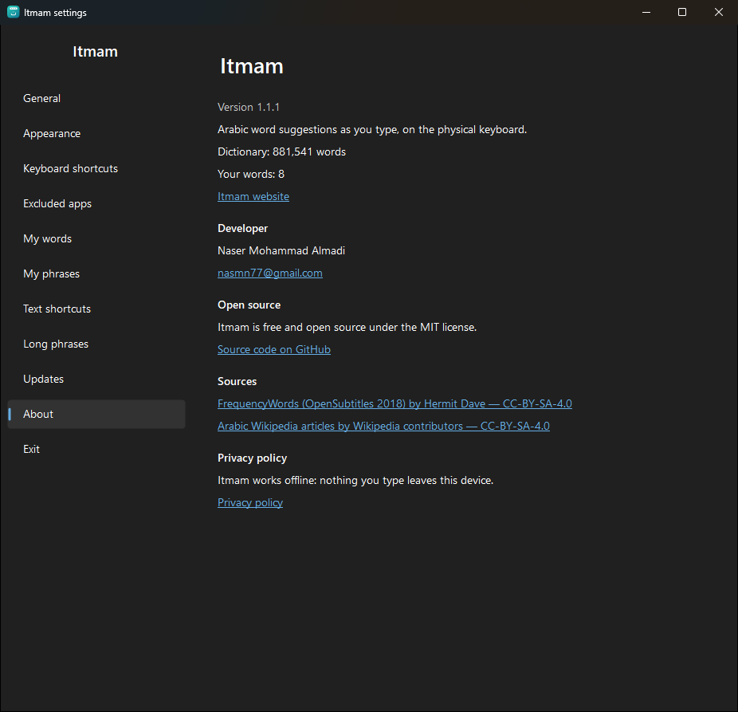
About: the version, the dictionary and your word counts, the Itmam website, contacting the developer, the source code, the dictionary sources, and the privacy policy.
17. Privacy
Sends no data: no statistics, no crash reports. Its only connection is asking Microsoft Store about updates, and it can be turned off.
Your text is not saved: only the words and short phrases you repeat, with how many times you used them, on your PC.
Silent where it should be: nothing is read from password fields, excluded apps, or apps running as administrator.
Open source: anyone can review the code on GitHub.
Full privacy policy: https://nasmn77.github.io/Itmam/en/privacy.html
18. Troubleshooting
The bar does not appear
Make sure the keyboard layout is Arabic.
Make sure Itmam is on: its icon is next to the clock, and its menu says "Turn off Itmam", not "Turn on Itmam".
Is the app excluded? Running as administrator? Full screen?
The bar appears after the number of letters set in General (two by default).
The bar is not at the caret
Some apps do not tell Windows where the caret is, so Itmam places the bar at the text field or at the mouse. Typing and inserting still work.
An odd word keeps being suggested
Right-click it, then "Delete" if it was learned, or "Block" so it is never suggested.
Moving Itmam to a new PC
General → "Back up…" on the old PC, then "Restore…" on the new one.
Bug reports
Found a problem? Write to us on GitHub, where a ready "Bug report" form is waiting: